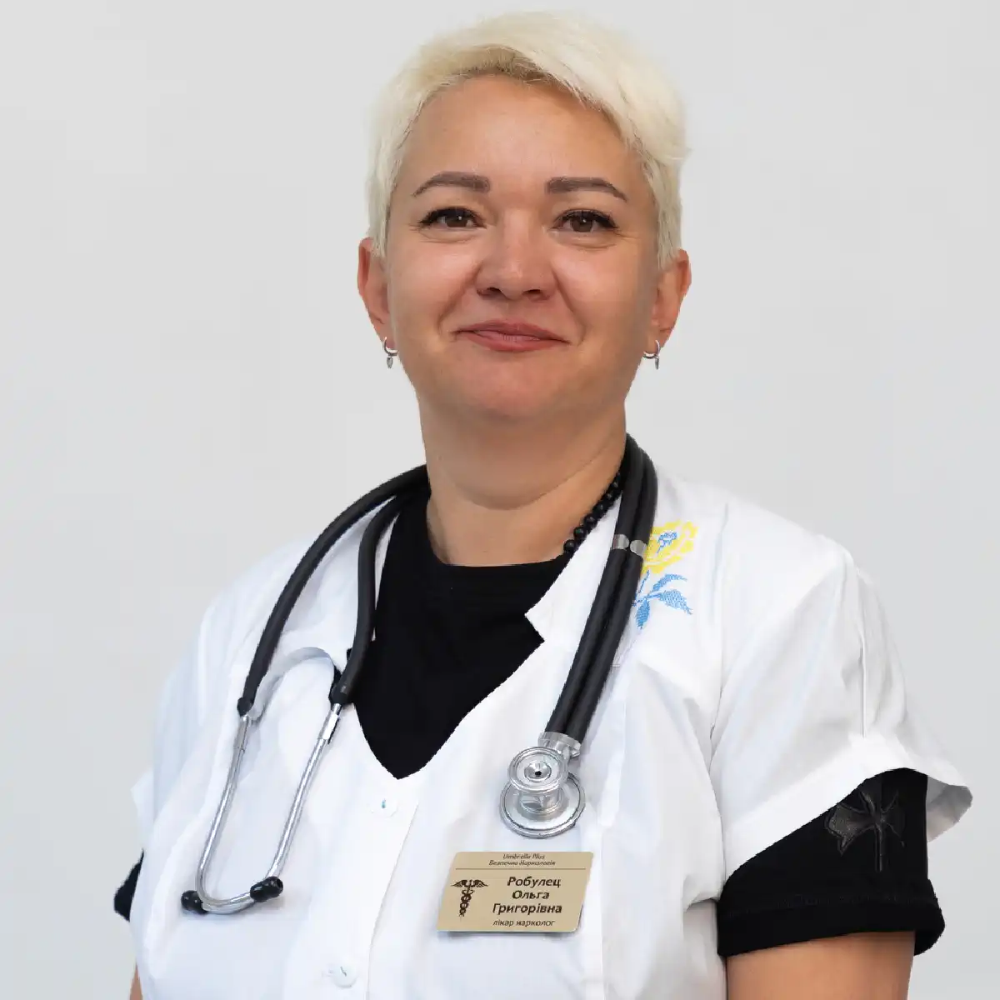

+38(068) 79 72 782
+38(068) 79 72 782Кодирование от алкоголизма Черноморск
Верните мир и покой в свою семью


Бесплатная консультация, работаем круглосуточно 24/7
Верните мир и покой в свою семью
Кодирование от алкоголизма в Черноморске — это современный и клинически обоснованный метод лечения алкогольной зависимости, направленный на формирование устойчивого и осознанного отказа от употребления спиртных напитков. Процедура воздействует как на физиологические, так и на психологические механизмы зависимости, помогая пациенту преодолеть патологическую тягу к алкоголю и восстановить контроль над своим поведением. Кодирование создаёт надёжный защитный барьер от срывов, особенно в период, когда организм и психика наиболее уязвимы к возврату к употреблению.
Данный метод широко применяется для прерывания запоев, стабилизации эмоционального состояния и снижения навязчивых мыслей об алкоголе. Он позволяет человеку почувствовать первые признаки трезвости: улучшение сна, нормализацию давления и сердечного ритма, повышение работоспособности, ясность мышления и снижение тревожности. Уже на ранних этапах после кодирования пациенты отмечают заметное улучшение общего самочувствия и качества жизни.
Кодирование может использоваться как самостоятельный метод на начальной стадии алкоголизма, когда зависимость ещё не привела к глубоким физическим и психическим нарушениям. В более сложных случаях процедура становится частью комплексной терапии, которая включает детоксикацию, медикаментозную поддержку, психотерапию и последующую реабилитацию. Такой подход позволяет не только временно отказаться от алкоголя, но и сформировать устойчивую мотивацию к трезвому образу жизни.
Самой сильной кодировкой от алкоголизма считается медикаментозное кодирование с применением препаратов на основе дисульфирама, а также комбинированные методики, в которых лекарственное воздействие сочетается с психотерапевтической работой. Эти способы лечения формируют двойной защитный механизм — физиологический и психологический, что значительно повышает эффективность кодирования и снижает вероятность срывов даже при длительном стаже употребления алкоголя.
Препараты на основе дисульфирама блокируют ферменты, отвечающие за расщепление этанола в организме. В результате даже минимальное количество алкоголя вызывает резкую негативную реакцию: тошноту, головную боль, покраснение кожи, учащённое сердцебиение, одышку, скачки давления и выраженное ухудшение самочувствия. Осознание возможных последствий формирует стойкое отвращение и страх перед употреблением спиртного, что становится мощным сдерживающим фактором.
Комбинированные методы кодирования усиливают эффект медикаментозного воздействия за счёт психотерапевтической поддержки. Работа с врачом помогает изменить отношение к алкоголю, проработать триггеры зависимости, снизить уровень тревожности и сформировать внутреннюю мотивацию к трезвости. Такой подход особенно эффективен для пациентов, которые ранее сталкивались со срывами или имеют длительный опыт зависимости.
Сильное кодирование применяется строго по показаниям и только после полного выведения алкоголя из организма. Перед процедурой проводится медицинский осмотр, оценивается состояние сердечно-сосудистой системы, печени, психики и общее состояние здоровья. Это необходимо для обеспечения безопасности пациента и выбора оптимальной дозировки препарата. При соблюдении всех рекомендаций врача, отказе от алкоголя и последующем сопровождении специалистов сильная кодировка позволяет добиться длительной и стабильной ремиссии, восстановить физическое здоровье, эмоциональное равновесие и социальную адаптацию. Она становится важным этапом комплексного лечения алкогольной зависимости и надёжной опорой на пути к полноценной трезвой жизни.
Кодирование от алкоголизма проводится исключительно врачом-наркологом после обязательной очной консультации и медицинского осмотра. На первичном приёме специалист подробно собирает анамнез, оценивает общее физическое и психоэмоциональное состояние пациента, длительность и частоту употребления алкоголя, наличие запойных периодов, предыдущий опыт лечения зависимости, а также выявляет возможные хронические заболевания и противопоказания к процедуре.
Особое внимание уделяется состоянию сердечно-сосудистой системы, печени, почек, нервной системы и психического здоровья. При необходимости врач может назначить дополнительные обследования или рекомендовать предварительную детоксикацию организма, особенно если пациент недавно употреблял алкоголь. Полное выведение этанола из крови является обязательным условием для безопасного и эффективного кодирования.
После оценки всех факторов нарколог подбирает оптимальный метод кодирования — медикаментозный, психотерапевтический либо комбинированный. Выбор метода зависит от стадии алкогольной зависимости, мотивации пациента, наличия сопутствующих заболеваний и индивидуальных особенностей организма. Пациенту подробно объясняют принцип действия выбранного способа, возможные ощущения, ожидаемый результат и правила поведения после процедуры.
| Кодирование уколом Черноморск | Цена |
|---|---|
| Инъекция препарата Дисульфирам (3 месяца) | От 4000 грн |
| Инъекция препарата Дисульфирам (6 месяцев) | От 6000 грн |
| Инъекция препарата Дисульфирам (12 месяцев) | От 8000 грн |
| Инъекция препарата Эспераль (6 месяцев) | От 6000 грн |
| Инъекция препарата Эспераль (12 месяцев) | От 8000 грн |
| Инъекция препарата Тетолонг (6 месяцев) | От 8000 грн |
| Инъекция препарата Тетолонг (12 месяцев) | От 12000 грн |
| Инъекция препарата Вивитрол (12 месяцев) | От 12000 грн |
| Инъекция препарата Аквилонг (12 месяцев) | От 12000 грн |
| Авторское трехэтапное кодирование уколом (1-5 лет) | От 12000 грн |
| Раскодировка от алкоголизма (укола) | От 6000 грн |
| Хирургическое кодирование от алкоголизма Черноморск | Цена |
|---|---|
| Имплантация (подшивка) капсулы Эспераль (12 месяцев) | От 10000 грн |
| Имплантация (подшивка) капсулы Эспераль (18 месяцев) | От 12000 грн |
| Имплантация (подшивка) капсулы Эспераль (24-36 месяцев) | От 15000 грн |
| Имплантация (подшивка) геля Дисульфирам (12 месяцев) | От 10000 грн |
| Имплантация (подшивка) геля Дисульфирам (18 месяцев) | От 12000 грн |
| Имплантация (подшивка) геля Дисульфирам (24-36 месяцев) | От 15000 грн |
| Раскодировка от алкоголизма (хирургически) | От 8000 грн |
| Психотерапевтическое кодирование от алкоголизма Черноморск | Цена |
|---|---|
| Кодирование по методу Довженко (1-5 лет) | От 10000 грн |
| Кодирование гипнозом (1-5 год) | От 10000 грн |
| Авторское кодирование от алкоголизма гипнозом (5 лет) | От 12000 грн |
| Трехэтапное кодирование от алкоголизма гипноз + метод Довженко (5-10 лет) | От 20000 грн |
| Психофармакологическое кодирование от алкоголизма (1-5 лет) | От 20000 грн |
| Кодирование от алкоголизма лазером | От 10000 грн |
| Таблетированное кодирование от алкоголизма | Цена |
|---|---|
| Кодирование от алкоголизма Эспераль таблетки | От 1400 грн |
| Кодирование от алкоголизма Тетурам таблетки | От 1400 грн |
| Кодирование от алкоголизма Дисульфирам таблетки | От 1400 грн |
| Кодирование от алкоголизма Капли Мидзо | От 1400 грн |
Инъекционное кодирование препаратом на основе дисульфирама считается одним из самых надёжных и клинически проверенных методов лечения алкогольной зависимости. Суть метода заключается во введении препарата, который блокирует ферменты, отвечающие за расщепление этилового спирта в организме. В результате даже минимальное количество алкоголя вызывает выраженную негативную реакцию, что формирует стойкий физиологический запрет на употребление спиртного.
После инъекции препарат начинает действовать достаточно быстро, обеспечивая стабильный и продолжительный эффект на срок, оговорённый с врачом — от нескольких месяцев до одного года и более. Одним из ключевых преимуществ метода является отсутствие необходимости ежедневного приёма медикаментов, что снижает риск пропусков и повышает эффективность лечения. Пациенту не нужно постоянно контролировать приём таблеток — защитный механизм работает автоматически.
При попытке употребления алкоголя на фоне дисульфирама могут возникать такие симптомы, как резкая головная боль, тошнота, рвота, покраснение кожи, учащённое сердцебиение, одышка, чувство страха и сильный дискомфорт. Осознание возможных последствий формирует устойчивое психологическое отвращение к алкоголю и значительно снижает вероятность срыва. Инъекционное кодирование проводится строго под медицинским контролем, после обязательной детоксикации и полного отказа от алкоголя на установленный период. Врач подробно информирует пациента о действии препарата, возможных реакциях и правилах поведения после процедуры. При соблюдении всех рекомендаций метод является безопасным, эффективным и помогает пациенту сосредоточиться на восстановлении трезвого образа жизни и дальнейшей реабилитации.
Перед кодированием от алкоголизма обязательным условием является соблюдение периода полной трезвости. В среднем он составляет от 3 до 7 дней, однако точный срок определяется врачом-наркологом индивидуально, с учётом стажа употребления, состояния здоровья, наличия запоев и выраженности абстинентного синдрома. В некоторых случаях, особенно после длительного запоя, предварительно проводится медицинская детоксикация для безопасного очищения организма от алкоголя и продуктов его распада. Период трезвости необходим для стабилизации работы сердечно-сосудистой системы, печени и нервной системы, а также для нормализации артериального давления и общего самочувствия пациента. Наличие алкоголя в крови во время кодирования может привести к тяжёлым побочным реакциям, поэтому строгое соблюдение этого этапа является важнейшим условием безопасности процедуры.
Кроме физиологической подготовки, трезвый период позволяет пациенту психологически настроиться на лечение, осознанно принять решение о кодировании и обсудить с врачом все возможные методы, их длительность и ожидаемый эффект. Врач также проводит осмотр, при необходимости назначает анализы и исключает противопоказания. Соблюдение рекомендованного срока трезвости значительно повышает эффективность кодирования, снижает риск осложнений и создаёт прочную основу для дальнейшего успешного лечения алкогольной зависимости и сохранения устойчивой ремиссии.
Кодирование от алкоголизма категорически не проводится в состоянии алкогольного опьянения. Наличие этанола и продуктов его распада в организме является прямым медицинским противопоказанием, поскольку значительно повышает риск тяжёлых побочных реакций и может привести к опасным осложнениям со стороны сердца, нервной системы и дыхания. Кроме того, проведение процедуры на фоне алкоголя существенно снижает её эффективность и не формирует устойчивого терапевтического результата.
Перед кодированием пациент должен быть полностью трезв, а организм — максимально очищен от алкоголя. Это необходимо для корректного действия препаратов или психотерапевтических методик, а также для обеспечения безопасности пациента. Врач-нарколог обязательно оценивает состояние здоровья, уровень интоксикации и при необходимости рекомендует предварительную детоксикацию или капельницу для выведения токсинов. Соблюдение трезвого периода перед кодированием позволяет минимизировать риски, повысить эффективность лечения и обеспечить длительный защитный эффект. Только при полном отсутствии алкоголя в организме процедура кодирования может быть проведена правильно, безопасно и с прогнозируемым положительным результатом.
Принудительное кодирование от алкоголизма не рекомендуется и в большинстве случаев не даёт устойчивого терапевтического результата. Алкогольная зависимость — это не только физическое, но и глубоко психологическое заболевание, поэтому эффективность любого метода лечения напрямую зависит от осознанного согласия, внутренней мотивации и готовности самого пациента к отказу от спиртного.
Даже самые сильные и современные методы кодирования — медикаментозные, психотерапевтические или комбинированные — не способны дать длительный эффект, если человек не принимает решение лечиться самостоятельно. В таких ситуациях кодирование часто воспринимается как внешнее давление, что может привести к сопротивлению, скрытому употреблению алкоголя, срывам и утрате доверия к лечению. На практике наилучшие результаты достигаются тогда, когда перед кодированием проводится мотивационная беседа с врачом-наркологом, разъясняются последствия зависимости, цели лечения и возможные пути восстановления. Формирование внутреннего желания изменить образ жизни значительно повышает эффективность кодирования, снижает риск рецидивов и создаёт основу для долгосрочной трезвости. Таким образом, добровольность и осознанное участие пациента являются ключевыми условиями успешного кодирования от алкоголизма и последующего восстановления качества жизни.
При правильном подборе метода и строгом соблюдении всех медицинских рекомендаций кодирование от алкоголизма является безопасной и контролируемой процедурой. Современные методы кодирования проходят клиническую проверку, применяются по утверждённым протоколам и подбираются индивидуально, с учётом возраста пациента, стажа употребления алкоголя, наличия хронических заболеваний и общего состояния здоровья.
Опасность может возникнуть только при нарушении условий кодирования, прежде всего при употреблении алкоголя после процедуры, особенно если использовались препараты на основе дисульфирама или комбинированные методы. В таких случаях возможна выраженная негативная реакция организма: резкое ухудшение самочувствия, скачки давления, тахикардия, одышка, тошнота, чувство страха. Именно поэтому пациенту подробно объясняются все последствия употребления спиртного после кодировки и важность строгого соблюдения трезвости.
Также риски увеличиваются, если пациент скрывает информацию о своём состоянии здоровья, перенесённых заболеваниях сердца, печени, нервной системы или приёме определённых лекарственных препаратов. Недостаток информации может привести к неправильному выбору метода кодирования и повышению вероятности побочных реакций. Поэтому обязательная предварительная консультация с врачом-наркологом является ключевым этапом лечения. Осмотр, сбор анамнеза и откровенный диалог позволяют обеспечить максимальную безопасность процедуры, высокую эффективность кодирования и создать надёжную основу для длительного и устойчивого отказа от алкоголя.
«Горячий укол» — это распространённое бытовое название одного из видов инъекционного кодирования от алкоголизма, при котором после введения препарата пациент действительно может ощущать выраженное тепло, распространяющееся по телу. Такое ощущение связано с фармакологическим действием лекарственного средства, его влиянием на сосудистый тонус и обменные процессы, а не с каким-либо ожогом или повреждением тканей.
Важно понимать, что «горячий укол» не является опасной процедурой, если она проводится квалифицированным врачом-наркологом и после предварительного медицинского осмотра. Перед инъекцией специалист оценивает общее состояние пациента, наличие хронических заболеваний, противопоказаний и соблюдение периода трезвости. Сам препарат вводится в строго рассчитанной дозировке, что исключает риск серьёзных побочных реакций.
Кратковременное чувство жара, покраснение кожи или лёгкое головокружение после укола считаются допустимой реакцией организма и, как правило, проходят самостоятельно в течение короткого времени. Медицинский контроль на всех этапах процедуры позволяет своевременно отреагировать на любые изменения самочувствия и гарантирует безопасность кодирования. Таким образом, «горячий укол» — это эффективный и проверенный метод кодирования, который при правильном подходе помогает сформировать устойчивое отвращение к алкоголю и снизить риск повторных запоев, становясь важным шагом на пути к трезвой и стабильной жизни.
Срок действия кодирования от алкоголизма напрямую зависит от выбранного метода лечения, используемого препарата и индивидуальных особенностей организма пациента. В среднем действие кодировки может сохраняться от 3, 6 месяцев до 1 года и более, однако в ряде случаев при хорошем ответе организма и высокой мотивации пациента эффект продолжается значительно дольше.
Медикаментозные методы кодирования, особенно с применением препаратов на основе дисульфирама или его аналогов, обеспечивают выраженный и устойчивый защитный эффект на весь заявленный срок действия препарата. Психотерапевтические и комбинированные методы могут иметь более гибкую продолжительность, зависящую от глубины внушения, психологического состояния пациента и его готовности соблюдать трезвость.
Кодирование не является пожизненной процедурой, и при необходимости его можно безопасно продлить или повторить. Решение о повторной кодировке принимается после консультации с врачом-наркологом, оценки общего состояния здоровья, периода трезвости и эффективности предыдущего метода. Своевременное продление кодирования позволяет закрепить результат, снизить риск срыва и поддержать пациента на пути к устойчивой трезвости и восстановлению качества жизни.
Кодировка не бывает вечной, потому что алкогольная зависимость имеет не только физиологическую, но и психологическую природу. Физиологическая составляющая — это привыкание организма к этанолу, изменения в работе мозга и выработка толерантности к алкоголю, тогда как психологическая — это формирование устойчивых привычек, эмоциональная зависимость и использование спиртного как способа снятия стресса или решения жизненных проблем. Со временем действие препарата ослабевает, и без осознанной работы с причинами зависимости риск срыва значительно возрастает.
Именно поэтому кодирование следует рассматривать не как единственный способ лечения, а как часть комплексного подхода. Медикаментозная защита создаёт физиологический барьер к употреблению алкоголя и помогает пережить первые недели трезвости без срывов. Однако для достижения устойчивой трезвости и нормализации психоэмоционального состояния важно сочетать кодирование с психотерапией, индивидуальными и групповыми занятиями, а также изменением образа жизни. Кодирование — это эффективный стартовый этап, который даёт организму и психике защиту, но для долгосрочного успеха необходимо комплексное лечение. Только сочетание медицинского вмешательства, психотерапии и изменений в повседневной жизни позволяет снизить риск рецидивов, укрепить здоровье и построить стабильную трезвую жизнь
Кодирование действительно работает, особенно на начальном этапе трезвости, когда организм и психика находятся под сильным воздействием привычки к алкоголю. Медикаментозные или комбинированные методы кодирования создают физическую и психологическую защиту, уменьшая тягу к спиртному и препятствуя срывам. Пациент получает возможность пережить самые острые периоды абстиненции, когда риск возвращения к алкоголю максимален.
Однако максимальный и долговременный эффект достигается только при комплексном подходе. Это включает не только кодирование, но и психотерапевтическую работу, формирование здоровых привычек, изменение образа жизни и социальную поддержку. Психотерапия помогает выявить личные триггеры употребления алкоголя, научиться управлять стрессом, тревожностью и эмоциональными перепадами без спиртного, а также выстроить новые поведенческие модели, поддерживающие трезвый образ жизни. Кодирование создаёт безопасный стартовый период, когда организм и психика защищены, но для закрепления результата важно продолжать терапию, поддерживать мотивацию, соблюдать рекомендации врача и участвовать в реабилитационных программах. Только такой комплексный подход обеспечивает стабильную трезвость, укрепляет здоровье, восстанавливает физическую и эмоциональную устойчивость и снижает риск повторных срывов.
В Черноморске возможна процедура кодирования от алкоголя на дому, которая сочетает в себе профессионализм медицинского подхода и комфорт привычной обстановки для пациента. Такой формат особенно актуален для людей, которые ценят анонимность, желают избежать лишнего внимания и стресса, связанного с посещением клиники, или имеют ограничения по состоянию здоровья, затрудняющие выезд. Домашнее кодирование позволяет человеку пройти процедуру в привычной для него среде, что снижает тревожность, улучшает восприятие лечения и повышает шансы на успешный результат.
Врач-нарколог приезжает по адресу, проводит тщательный медицинский осмотр, оценивает общее физическое состояние, психоэмоциональное состояние, наличие сопутствующих заболеваний и стаж употребления алкоголя. На основании полученных данных подбирается оптимальный метод кодирования, учитывающий индивидуальные особенности пациента. Это может быть инъекционное медикаментозное кодирование, при котором формируется устойчивый физиологический барьер против употребления алкоголя; приём таблетированных препаратов пролонгированного действия, обеспечивающих длительный эффект без необходимости ежедневного контроля; или комбинированный метод, включающий психотерапевтическое сопровождение, что позволяет одновременно формировать психологическую устойчивость к алкоголю.
Процедура проводится в комфортных и безопасных условиях, с соблюдением всех медицинских протоколов, строгим контролем врача и возможностью мгновенной коррекции реакции организма на препарат. Домашнее кодирование обеспечивает эффективную защиту от срывов, снижает проявления абстиненции, формирует стойкую негативную реакцию организма на алкоголь и способствует формированию новых, здоровых привычек. Кроме того, пациент получает подробные рекомендации по дальнейшей поддержке трезвости, корректировке образа жизни и профилактике рецидивов, что делает домашнюю процедуру полноценной частью комплексного лечения алкогольной зависимости.
Особенно важно, что такой подход обеспечивает полную конфиденциальность: визит врача происходит без опознавательных знаков и медицинской символики, а вся информация о пациенте и проведённой процедуре остаётся строго приватной. Это особенно актуально для людей, занимающих ответственные должности, предпринимателей, публичных персон и всех, кто не желает афишировать своё обращение за наркологической помощью. Анонимность и комфорт повышают доверие пациента к врачу, уменьшают стресс и способствуют лучшему усвоению терапевтического эффекта.
Кодирование от алкоголя в Черноморске также позволяет экономить время и силы, так как пациенту не нужно тратить время на дорогу в клинику, стоять в очередях или находиться в больничной среде, что может усиливать психологическое напряжение. Врач приезжает в удобное для пациента время, оценивает состояние организма, объясняет этапы процедуры и сопровождает весь процесс до получения ожидаемого терапевтического эффекта.
Наркология UmbrellaPlus в Черноморске предлагает профессиональное кодирование от алкоголизма, которое проводится с учётом индивидуальных особенностей каждого пациента. Мы применяем современные методы кодирования, включая инъекционные препараты на основе дисульфирама, таблетированные средства пролонгированного действия и комбинированные подходы с психотерапией, что позволяет достичь максимальной эффективности и надёжной защиты от срывов.
Наши наркологи сопровождают пациента на всех этапах лечения, включая консультацию перед кодированием, контроль за состоянием после процедуры и рекомендации по поддержанию трезвости. Мы помогаем не только прервать употребление алкоголя, но и сформировать устойчивую мотивацию к трезвому образу жизни, снижая риск рецидивов и создавая основу для полноценной социальной и психологической реабилитации. Первый шаг к новой жизни можно сделать уже сегодня:
Звоните по телефону: +38(050-021-69-57)
Да, мы строго соблюдаем полную конфиденциальность на всех этапах лечения. Информация о пациенте, диагнозе и прохождении терапии не передаётся третьим лицам. Обращение к нам не влечёт постановку на учёт. Вы можете быть уверены в безопасности и анонимности.
Программа лечения разрабатывается индивидуально после консультации со специалистом. Учитываются вид зависимости, её длительность, физическое и психологическое состояние пациента. Такой подход позволяет повысить эффективность терапии и снизить риск срыва. Мы не используем шаблонные решения.
Да, мы сопровождаем пациентов и после основного курса лечения. Проводятся консультации, рекомендации по адаптации и профилактике рецидивов. При необходимости возможна дальнейшая психологическая поддержка. Это помогает сохранить результат и вернуться к полноценной жизни.
Александр

Решила сделать укол от алкоголизма по рекомендации подруги, которая проходила эту процедуру в этом же центре. Я сомневалась, но врачи всё объяснили, успокоили. После укола не чувствую тяги к алкоголю, хотя раньше сложно было представить день без выпивки. Сейчас наслаждаюсь трезвостью, чувствую себя намного лучше.
Анонимно
Дуже довго не міг самостійно позбавитися залежності, тому зважився на підшивку. Процедура пройшла успішно, і з того часу я навіть не думаю про спиртне. Страх перед можливими наслідками допомагає триматися на плаву, а підтримка фахівців – величезна підмога у цьому нелегкому шляху. Центр надає як фізичну, а й моральну допомогу. Вдячний їм за другий шанс.
Анонимно
Я никогда не думал, что психологическое воздействие может настолько сильно повлиять на мою жизнь. Врач помог осознать всю серьезность ситуации, и теперь алкоголь не вызывает у меня никакого интереса. Процедура безопасна и эффективна, рекомендую тем, кто хочет по-настоящему изменить свою жизнь.
Анонимно
Я прошла кодирование гипнозом, и это было удивительное переживание. Во время сеанса я почувствовала глубокое расслабление, а потом – будто внутри что-то изменилось. Сейчас я свободна от алкоголя и наслаждаюсь этим состоянием. Благодарю центр за профессионализм и заботу! Отдельная благодарность Станиславу Вячеславовичу
Анонимно
Чесно кажучи, боявся рецидиву, але з процедури минуло півроку, і я навіть не думаю про випивку. Життя почало змінюватися на краще. Дякуємо лікарям за підтримку та мотивацію!
Анонимно
Після багаторічної боротьби із залежністю вирішила звернутись в клінку. Спочатку переживала, але лікарі дуже докладно розповіли про процес та можливі наслідки. Зараз я не п’ю вже 8 місяців і почуваюся чудово. Я така щаслива, що знайшла цей центр і знайшла контроль над своїм життям.
Анонимно
Метод Долженко казался мне странным, но я решил попробовать. Оказалось, что это не просто кодировка, а глубокая работа с психикой. Это позволило мне кардинально изменить отношение к алкоголю. Уже год я не пью, и не планирую возвращаться к прежней жизни. Простое человеческое спасибо!
Анонимно
Гипноз помог мне избавиться от постоянной тяги к алкоголю. После сеансов я заметила, что стала спокойнее и увереннее в себе. Теперь алкоголь меня больше не интересует. Центр мне очень помог, и я благодарна за их заботу и поддержку.
Номер телефона:
+380 (68) 797 27 82
+380 (50) 021 69 57
Адрес наркологического центра вашего города уточняйте по
телефону
Работаем в: Киеве, Одессе, Львове, Харькове, Днепре,
Запорожье, Черкассах, Чугуеве, Черноморске, Каменском
Telegram: t.me/umbrellaplus
График работы: Круглосуточно